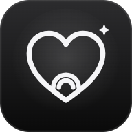

Нет подключения к интернету
Помощник откроется, как только появится сеть. В следующий раз он запомнит последние данные и будет открываться и без интернета.

Помощник откроется, как только появится сеть. В следующий раз он запомнит последние данные и будет открываться и без интернета.